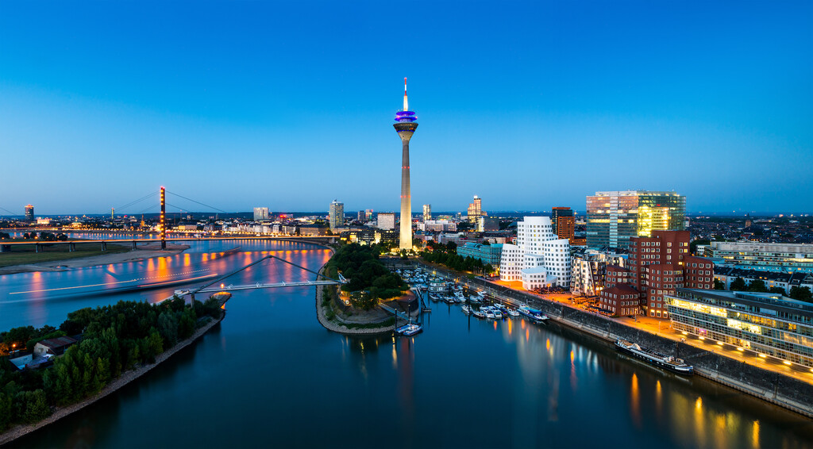

News
-1-1024x722.jpg)
One week before our event: 56 pages brochure available for download!
We are particularly pleased that both Federal Ministers responsible for construction have written contributions for the program brochure. Horst Seehofer, Federal Minister of the Interior, for Building and Home Affairs, and Andreas Scheuer, Federal Minister of Transport and Digital Infrastructure, unanimously emphasize the importance of open standards for digital planning and building. The program brochure contains all program of the buildingSMART International Standards Summit, in particular the packed agendas for the opening day and the closing day as well as the portraits of our speakers.
All seats at Welcome Dinner fully booked!
At the traditional buildingSMART International Welcome Dinner on Monday evening, March 25, 2019 at the "Rheinterrasse" we expect 360 guests from over 30 countries. The evening is beginning with a welcome drink from 6:00 p.m. This will be followed by the dinner speech of the North Rhine-Westphalian Minister of Construction, Ina Scharrenbach. After dinner, Richard Petrie, Managing Director of buildingSMART International, will award further buildingSMART Fellows. Sorry - we are now fully booked! ... Save one of the last tickets for Opening Plenary, International Working Group Meetings, International Side Program "BIM at its Best" and the Closing Plenary! Also for the 17th buildingSMART User Day there are still some tickets available.
Where to go out in Dusseldorf?
Our suggestions for going out and having a drink or dinner, you can find here:
Bars and pubs
Having a drink
Best Restaurants
Bars and pubs
Having a drink
Best Restaurants
17th buildingSMART User Day also recognized as further education by the Chamber of Engineers-Construction NRW!
The 17th buildingSMART User Day is recognized as further education for members of the Chamber of Engineers-Construction (Ingenieurkammer-Bau) North Rhine-Westphalia for engineers with 6 teaching hours. Please contact our office for a certificate of attendance. The Chamber of Engineers-Construction (Ingenieurkammer-Bau NRW) is one of our numerous ideals supporters of the big buildingSMART week in the "BIM world capital" Dusseldorf.
www.buildingsmart2019.de/en/programm-anwendertag.html
www.buildingsmart2019.de/en/programm-anwendertag.html
In two weeks the buildingSMART International Standards Summit starts in Dusseldorf!
Now the complete 6-page program can be downloaded. ... See you soon in Dusseldorf!
#bSIDUS19
#bSIDUS19
Recognition of buildingSMART User Day as further education by the Chamber of Architects NRW!
The 17th buildingSMART User Day is recognised as an further educationadvanced training course for members of the Chamber of Architects of North Rhine-Westphalia in the fields of architecture, interior design, landscape architecture and urban planning with 4 teaching hours. Please contact our office for a certificate of attendance. The Chamber of Architects NRW is one of our numerous ideals supporters of the big buildingSMART week in the "BIM world capital" Dusseldorf. www.buildingsmart2019.de/de/programm-anwendertag.html
The International Side Program "BIM at its Best" at #bSIDUS19 has been published!
On Tuesday and Wednesday of this week, while the technology experts meet in working groups, we offer an international side program for users, students and decision-makers from companies, politics and administration that provides a broad overview of #BIM practical projects. A day ticket costs 30 €.
First lectures for the side program "BIM at its Best" are now confirmed!
First lectures for the side program "BIM at its Best" of the buildingSMART International Standards Summit are now confirmed! Thanks to our sponsors, we can present experienced and prestigious speakers during the two programme days Tuesday, 26 March and Wednesday, 27 March in Dusseldorf. Further information on the programme can be found at: www.buildingsmart2019.de/de/program.html
Wuerth%20(002)-1024x574.jpg)
Keynote confirmed: "From screw dealer to system provider - BIM at Adolf Würth"
At the opening of the 17th buildingSMART User Day on 29th March 2019 in Düsseldorf, Dr.-Ing. Matthias Bruhnke, BIM representative at Würth, will show the opportunities that digitization and model-based information exchange mean for a major supplier. Adolf Würth GmbH & Co. KG is a specialist in the trade with assembly and fastening materials and sees its future business model not only in the production of C-parts but also in the provision of complete system solutions. ... Tickets and all further information at: www.buildingsmart2019.de/de/ticketing.html
The 17th buildingSMART User Day marks the end of a whole international BIM week and the standardization work of buildingSMART. Further keynotes are expected from Andy Verone, Global Vice President Oracle ("Future of Cloud Technology"), Matthias Rebellius, CEO Siemens Building Technologies ("Digital Twins - Gebäude"), Mark Enzer, CTO Mott McDonald ("Digital Twins - Infrastruktur") and Dr. Carsten Lotz, Partner McKinsey & Company ("Industry Insights on the State of Digitalization").
The 17th buildingSMART User Day marks the end of a whole international BIM week and the standardization work of buildingSMART. Further keynotes are expected from Andy Verone, Global Vice President Oracle ("Future of Cloud Technology"), Matthias Rebellius, CEO Siemens Building Technologies ("Digital Twins - Gebäude"), Mark Enzer, CTO Mott McDonald ("Digital Twins - Infrastruktur") and Dr. Carsten Lotz, Partner McKinsey & Company ("Industry Insights on the State of Digitalization").
Enjoy Dusseldorf!
Dusseldorf is a great City to enjoy! Dusseldorf is located directly at the river Rhine and has a wonderfull Old Town (Altstadt). The elegant, life-affirming city on the Rhine stands for fashion, shopping, culture and extraordinary events like the buildingSMART International Standards Summit. From Königsallee – fondly known as the “Kö”, one of Europe’s most luxurious shopping avenues – it’s just a short walk to the historical Altstadt (Old Town) with its 260 bars and restaurants. Its flair is world-famous, its narrow streets are vibrant, and the multifaceted cultural scene produces spectacular events and exhibitions. Our main location, the Dusseldorf Hilton Hotel, is close to both the river Rhine and the Old Town - so enjoy the buildingSMART International Standards Summit and enjoy Dusseldorf, too! More information on Dusseldorf.
Get your Ticket now!
Don't miss the extraordinary buildingSMART event this March in Dusseldorf and be quick to get your personal ticket. You can book your tickets online via our ticket shop. Please note that your personal rebate increases with the number of tickets you purchase. Example: You order the ticket for the opening plenary, the welcome dinner (both on Monday, 25th March 2019) and for the working groups on Tuesday - thus three modules. Your rebate is 15 per cent. If you order one module more, you will receive a rebate of 20 per cent.

Our Keynote-Speakers
The list of keynote speekers at the opening plenary on 25 March 2019 in Dusseldorf is complete! We expect presentations from Andy Verone, Global Vice President Oracle ("The Future of Cloud Technology"), Matthias Rebellius, CEO Siemens Building Technologies ("The Digital Twin - Buildings"), Mark Enzer, CTO Mott McDonald ("The Digital Twin - Infrastructure") and Dr. Carsten Lotz, Partner McKinsey & Company ("Industry Insights on the State of Digitalization").
Tickets for the opening plenary and the Welcome Dinner in the "Rheinterrasse" are available for 297 €. Order your tickets here!
Tickets for the opening plenary and the Welcome Dinner in the "Rheinterrasse" are available for 297 €. Order your tickets here!
Law@BIM - Working Group Session at bSI Standards Summit,
Law@BIM - Working Group Session at bSI Standards Summit on March 26, 2019 from 09:00 a.m. until 1:00 p.m. at the Hilton Dusseldorf. Please note: Participation is free of charge, but access is only possible with a valid day ticket for the bSI Standards Summit for that very day (i.e. Tuesday, 26 March 2019). If you’d like to register your interest in this meeting, please send an Mail to FG-Recht@buildingSMART.de (Subject: Law@BIM)
First presentations for 17th buildingSMART User Day confirmed!Erste Vorträge für 17. buildingSMART- Anwendertag bestätigt!
On March 29, 2019, our participants can expect more than thirty lectures in four parallel sections on very different topics in the Hilton Düsseldorf. In addition to an exchange of experience on technical issues relating to digital planning, construction and operation, the focus will also be on general conditions such as law, change management and further training. Wayss & Freytag Ingenieurbau, AEC3 Deutschland, Vollack Group, Bau- und Liegenschaftsbetrieb NRW, Vrame Consult, DEUBIM, KNH Rechtsanwälte, Astoc Architects and Planners, DT BAU - BIM-Beratung, Hochschule Osnabrück, Scape Landschaftsarchitekten, DiConneX, Wideburg Solutions, Kruse Architekten, Polydepartment, Hochschule Erfurt will be among the participants. Tickets for the User Day - and for all other program items of our buildingSMART week in the BIM world capital Dusseldorf - are available here.

Three bSI Roundtables in Dusseldorf
At the upcoming buildingSMART International Standards Summit 2019 in Düsseldorf, Germany, buildingSMART International will host three international roundtables on cutting-edge technology topics:
"Digital Twin" (Host: Wolfgang Hass, Siemens Building Technologies),
"BIM and GIS Integration" (Host: Geoff Zeiss, OGC Director) and
"Open Source Common Data Environment" (Host: Frank Weiss, Oracle).
The purpose of the roundtables is to discuss the need for the development of open standards together with leading heads from the participating disciplines and to agree on further action under the umbrella of buildingSMART International.
The Roundtables take place on Tuesday, March 26, 2019 in Hilton Düsseldorf.
Interested in participating?
Participation is free of charge, but access is only possible with a valid day ticket for the bSI Standards Summit that very day. If you’d like to register your interest in one of these roundtables, please email to: communications@buildingsmart.org
"Digital Twin" (Host: Wolfgang Hass, Siemens Building Technologies),
"BIM and GIS Integration" (Host: Geoff Zeiss, OGC Director) and
"Open Source Common Data Environment" (Host: Frank Weiss, Oracle).
The purpose of the roundtables is to discuss the need for the development of open standards together with leading heads from the participating disciplines and to agree on further action under the umbrella of buildingSMART International.
The Roundtables take place on Tuesday, March 26, 2019 in Hilton Düsseldorf.
Interested in participating?
Participation is free of charge, but access is only possible with a valid day ticket for the bSI Standards Summit that very day. If you’d like to register your interest in one of these roundtables, please email to: communications@buildingsmart.org
Product data in the digital value chain
Further details of the Closing Plenary program at Hashtag#bSIDUS19 confirmed: In the panel "Product data in the digital value chain" we expect contributions from Barbara-Maria Loth (CDO Knauf Group), Dirk Schaper (CEO ProMaterial) and Konrad Werning (CEO ARGE Neue Medien). The day ticket costs 150 €, the week ticket incl. Welcome Dinner costs 585 €. All information about program, tickets, location and accommodation here on our special website.
Save your Early Bird Ticket for the buildingSMART International Standards Summit!
Save your Early Bird Ticket for the buildingSMART International Standards Summit and 17th buildingSMART User Day until the 15th January 2019! ... From 25th to 29th March 2019 the Hilton Dusseldorf will be the German BIM centre of keynotes, discussion rounds, many working meetings around the standards and services of buildingSMART, international and German practice reports and last but not least two evening events with the international and German BIM community.
Our sponsors

.jpg)

.jpg)